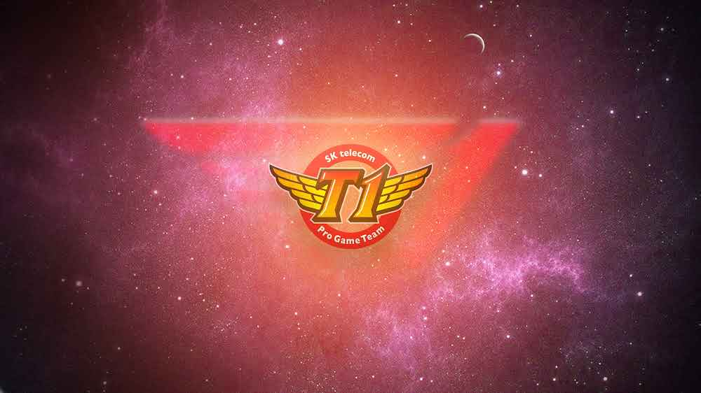
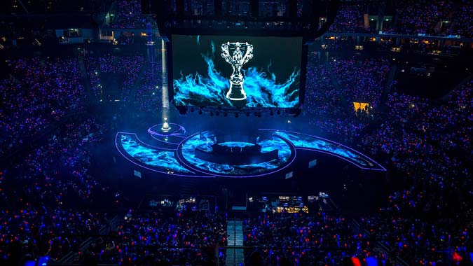
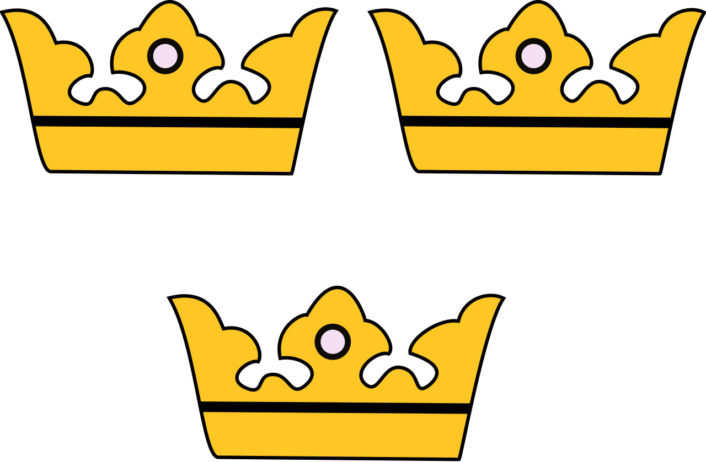
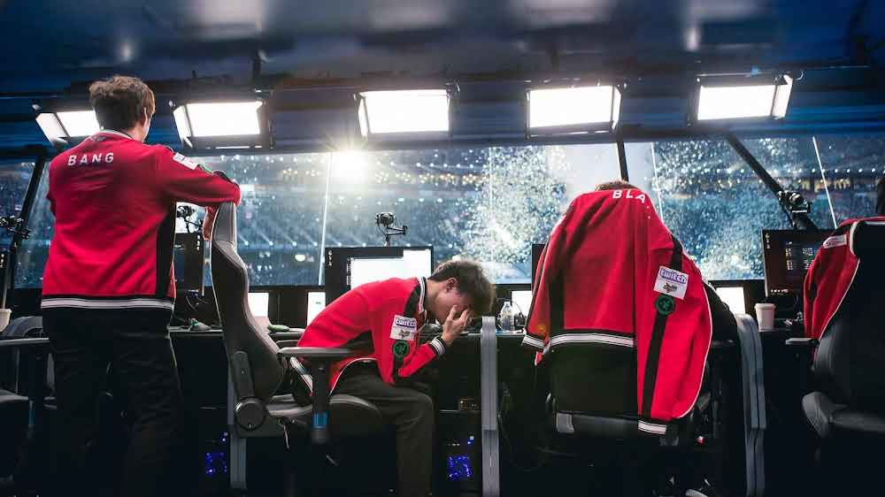
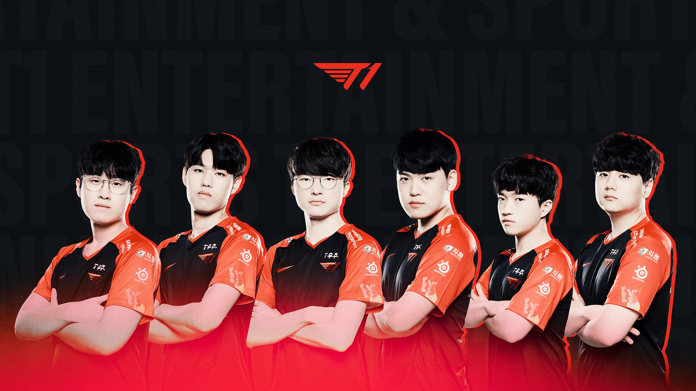

2014 - La création de la meilleure équipe
T1 avait un passé incroyable, on appelait cette ère "Triple Crown" Ils étaient connu sous le nom de SKT T1, une équipe qui dominait tous les tournois. Un début spectaculaire avec le roster suivant composé de Faker, Bengi, Piglet, PoohManDu et Impact. C'était la seule équipe à faire une saison parfaite sans perdre une seule game. SKT T1 remporte leur premier Worlds !
2015 - The Second Worlds
A peine 1 année et quelques moins, SKT T1 ne cesse de progresser et le démontre une nouvelle fois en battant en finale Koo Tigers et gagner leur deuxième titre.
2016 - Triple Crown
Vous comprenez ? C'est l'ère Triple Crown, en 3 ans ils gagnent 3 Worlds consécutives, et c'est la premère équipe au monde à réussir cet exploit et personne n'a encore détroner ce record. Ils rencontrent de grandes équipes mais Faker, ne laisse pas passer son 3ème titre. Voici la grandeur de cette équipe sans aucun difficulté en gagnant leur match facilement !
2017 à 2019 - La descente au enfer
Après la gloire, le repos. Pendant ses 3 ans, SKT T1 change énormément le roster et au final il ne reste plus que Faker. L'équipe ne performera plus du tout, mais essayera tant bien que mal à arracher la 2ème place. Le Midlaner reste fidèle à son équipe formateur, mais il ne gagnera plus rien à part la LCK. L'équipe prendra un grand tournant en 2020.
2020 à Actuellement - Le changement
SKT T1 changera de nom et s'appellera desormais T1 avec un tout nouveau roster prêt à défier les grandes équipes. Un énorme changement prend un temps d'adaptation, et pendant les 3 années ils vont s'entrainer dur mais ne performera pas au Worlds. Cependant on retrouve une belle évolution ! Maintenant 2023 est leur dernière année à jouer ensemble. Ils vont devoir prouver que les 3 années n'ont pas rien servi. En route pour le 4ème titre pendant l'année qui va suivre.
